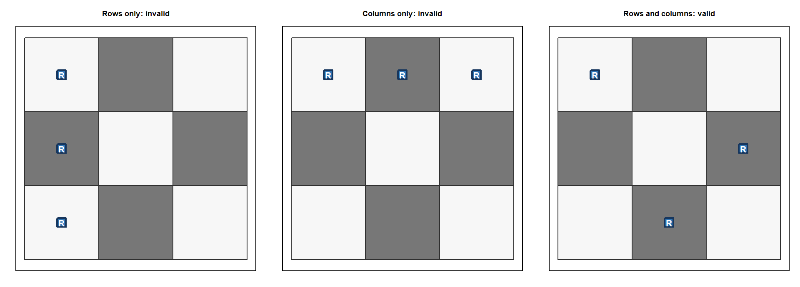

flowchart LR
P["Finite-domain CSP"] --> E["SAT encoding"]
E --> C["CNF file"]
C --> S["SAT solver"]
S --> B["Boolean model or UNSAT"]
B --> D["Decode the CSP solution"]
SAT Encodings and DPLL
Lecture 2 - 2 October 2026
1 From constraint problems to SAT
The lecture begins by recalling the two problem classes introduced previously.
A Constraint Satisfaction Problem consists of:
- variables \(V=\{V_1,\ldots,V_n\}\);
- domains \(D=\{D_1,\ldots,D_n\}\);
- constraints \(C\) over the variables.
Its solutions are assignments that choose one value from each variable’s domain and satisfy every constraint.
A Constraint Optimization Problem adds an objective function
\[ f:D_1\times\cdots\times D_n\to A \]
and asks for an admissible assignment that minimises, or equivalently maximises after a suitable reformulation, the objective value.
The previous lecture considered two naive solving methods: complete generate-and-test and backtracking with checks on partial assignments. This lecture studies a different route:
translate a finite-domain CSP into a Boolean satisfiability problem and delegate the resulting formula to a SAT solver.
The quality of this approach depends on both the correctness of the reduction and the effectiveness of the SAT solver.
2 The Boolean satisfiability problem
Let
\[ X_1,\ldots,X_n \]
be Boolean variables with domain
\[ D(X_i)=\{0,1\}. \]
A literal is either a variable \(X_i\) or its negation \(\neg X_i\). A clause is a disjunction of literals, and a formula is in conjunctive normal form (CNF) when it is a conjunction of clauses:
\[ \Phi = C_1\land\cdots\land C_k, \]
where
\[ C_i = \ell_{i1}\lor\cdots\lor\ell_{in_i}. \]
The SAT problem asks whether there exists an assignment
\[ \theta:\{X_1,\ldots,X_n\}\to\{0,1\} \]
such that
\[ \Phi\theta=1. \]
SAT is itself a CSP: the variables are Boolean and each clause is a constraint.
2.1 A clause as an arithmetic constraint
Consider
\[ X_1\lor\neg X_2. \]
Over the Boolean values \(0\) and \(1\), this clause is equivalent to
\[ X_1+(1-X_2)\geq1. \]
Its satisfying pairs are
\[ (1,0),\qquad(1,1),\qquad(0,0), \]
while \((0,1)\) falsifies both literals.
The lecture recalls the Boolean operations:
| \(a\) | \(b\) | \(a\lor b\) | \(a\land b\) |
|---|---|---|---|
| 0 | 0 | 0 | 0 |
| 0 | 1 | 1 | 0 |
| 1 | 0 | 1 | 0 |
| 1 | 1 | 1 | 1 |
Negation exchanges the two Boolean values:
\[ \neg0=1, \qquad \neg1=0. \]
2.2 Why SAT is useful
SAT was the first problem proved NP-complete. Consequently, every problem in NP can be transformed into SAT by a polynomial-time reduction. A finite-domain CSP is typically in NP, so it can in principle be encoded as a SAT instance and solved using software such as MiniSAT, PicoSAT, RelSAT, or another competition-grade SAT solver.
The theoretical existence of a reduction does not make the encoding automatic. The modeller must decide:
- which Boolean variables represent the original choices;
- which clauses enforce the original constraints;
- how original structured variables are mapped to the integer identifiers required by a solver;
- how a Boolean model is translated back into a solution of the initial problem.
3 Exactly-one constraints
Many encodings require exactly one variable in a collection
\[ y_1,\ldots,y_m \]
to be true. The lecture decomposes this into two parts.
3.1 At least one
At least one variable must hold:
\[ y_1\lor\cdots\lor y_m. \]
3.2 At most one
To enforce that at most one of the Boolean variables
\[ y_1,\ldots,y_m \]
is true, every pair of distinct variables must be prevented from being true simultaneously.
For each pair of indices (i<j), add the binary clause
\[ \neg y_i\lor\neg y_j. \]
This clause is false only when
\[ y_i=y_j=1. \]
It therefore excludes the assignment in which both variables in the pair are true.
The complete at-most-one constraint is
\[ \bigwedge_{1\leq i<j\leq m} (\neg y_i\lor\neg y_j). \]
The condition (i<j) ensures that every unordered pair is considered exactly once. For example, the pair ((y_1,y_2)) is included, while the equivalent reversed pair ((y_2,y_1)) is not generated again.
Together with the at-least-one clause
\[ y_1\lor\cdots\lor y_m, \]
these clauses enforce that exactly one variable is true.
NoteNumber of clauses in the pairwise encoding
The at-least-one condition requires one clause.
For the at-most-one condition, one binary clause is generated for every pair of distinct variables. The number of unordered pairs that can be selected from (m) variables is
\[ \binom{m}{2} = \frac{m(m-1)}{2}. \]
The factor (m(m-1)) first counts the ordered choices of two different variables: there are (m) choices for the first variable and (m-1) choices for the second. Division by (2) removes the duplicated order, because the pairs ((y_i,y_j)) and ((y_j,y_i)) produce the same clause.
For example, if (m=4), the six distinct pairs are
\[ (y_1,y_2),\quad (y_1,y_3),\quad (y_1,y_4),\quad (y_2,y_3),\quad (y_2,y_4),\quad (y_3,y_4). \]
The pairwise at-most-one encoding therefore contains
\[ \binom{4}{2} = \frac{4\cdot3}{2} = 6 \]
binary clauses:
\[ \begin{aligned} &(\neg y_1\lor\neg y_2) \land(\neg y_1\lor\neg y_3) \land(\neg y_1\lor\neg y_4)\\ &{}\land(\neg y_2\lor\neg y_3) \land(\neg y_2\lor\neg y_4) \land(\neg y_3\lor\neg y_4). \end{aligned} \]
Thus, the complete exactly-one encoding uses one at-least-one clause and
\[ \binom{m}{2} \]
binary at-most-one clauses.
4 SAT reduction of the non-attacking rooks problem
Consider an \(n\times n\) chessboard. The objective is to place \(n\) rooks so that no pair attacks another. The lecture uses \(n=3\) as the concrete example.
Introduce one Boolean variable per cell:
\[ V_{ij} = \begin{cases} 1, & \text{if a rook is placed in row }i\text{ and column }j,\\ 0, & \text{otherwise.} \end{cases} \]
There are \(n^2\) Boolean variables.
4.1 Exactly one rook in every row
For row \(i\), require at least one rook:
\[ V_{i1}\lor\cdots\lor V_{in}, \]
and require that no two cells in the row both contain a rook:
\[ \neg V_{ij}\lor\neg V_{ik} \qquad (1\leq j<k\leq n). \]
For the first row of the \(3\times3\) board, the clauses are
\[ V_{11}\lor V_{12}\lor V_{13}, \]
\[ \neg V_{11}\lor\neg V_{12}, \qquad \neg V_{11}\lor\neg V_{13}, \qquad \neg V_{12}\lor\neg V_{13}. \]
The same pattern is generated for rows \(2\) and \(3\).
Row constraints alone do not solve the original problem. The assignment with all three rooks in the first column satisfies “exactly one rook in each row”, but the rooks still attack vertically.
4.2 Exactly one rook in every column
For column \(j\), require
\[ V_{1j}\lor\cdots\lor V_{nj} \]
and
\[ \neg V_{ij}\lor\neg V_{kj} \qquad (1\leq i<k\leq n). \]
Column constraints alone are also insufficient: three rooks placed across the first row satisfy exactly one rook per column but attack horizontally.
4.3 Combining both families
When the row and column clauses are conjoined, SAT models correspond exactly to non-attacking rook placements. For example,
\[ V_{11}=V_{23}=V_{32}=1 \]
with every other \(V_{ij}=0\) describes one rook in each row and one rook in each column.

5 Generating the CNF instance
Once the encoding is understood mathematically, a program must generate all clauses.
For each row or column vector
\[ v=[v_1,\ldots,v_n], \]
the generator emits:
- one at-least-one clause containing all \(v_i\);
- one binary clause \((-v_i,-v_j)\) for every \(i<j\).
The pseudo-code from the deck is conceptually:
exactly_one(v):
print all v[i], then 0
for i = 1 to n - 1:
for j = i + 1 to n:
print -v[i], -v[j], 0The terminating zero belongs to the DIMACS representation, not to the logical clause itself.
6 DIMACS CNF format
SAT solvers commonly accept an ASCII DIMACS file with suffix .cnf.
The relevant conventions are:
- Boolean variables are represented by positive integers;
- integer \(0\) is reserved as the clause terminator;
- a positive integer \(p\) denotes \(X_p\);
- a negative integer \(-p\) denotes \(\neg X_p\);
- comment lines begin with
c; - the problem line begins with
p cnfand gives the number of variables and clauses.
For example:
c SAT encoding of a problem
p cnf 256 1200
54 0
-12 85 0
33 161 -200 0The header declares 256 variables and 1200 clauses. The next lines encode
\[ (X_{54}), \]
\[ (\neg X_{12}\lor X_{85}), \]
and
\[ (X_{33}\lor X_{161}\lor\neg X_{200}). \]
WarningThe header must match the generated file
The numbers in the p cnf line must equal the actual number of variables and clauses. A generator should therefore compute these values or accumulate the clauses before writing the final file.
6.1 Mapping structured variables to DIMACS identifiers
For the \(3\times3\) rook instance, the nine variables \(V_{ij}\) must be mapped to the integers \(1,\ldots,9\). A row-major mapping is
\[ \operatorname{id}(i,j)=3(i-1)+j. \]
Thus:
\[ \begin{array}{c|ccc} & j=1 & j=2 & j=3\\ \hline i=1 & 1 & 2 & 3\\ i=2 & 4 & 5 & 6\\ i=3 & 7 & 8 & 9 \end{array} \]
The mapping is reversible using integer division and remainder. More generally, for an \(n\times n\) board,
\[ \operatorname{id}(i,j)=n(i-1)+j. \]
7 Assignment as a SAT encoding
The Telethon example asks for 24 people to be assigned to 24 one-hour slots. Every person provides a set of available slots, and each person must receive exactly one slot.
For a smaller example with four people and four times, define a Boolean variable
\[ A_{pt} \]
that is true exactly when person \(p\) is assigned slot \(t\).
The encoding contains:
- exactly one available slot for every person;
- exactly one person for every slot;
- a negative unit clause \(\neg A_{pt}\) whenever person \(p\) is unavailable at time \(t\).
The availability and one possible assignment shown in the deck are:
| Person | 12 | 13 | 14 | 15 | Assigned slot |
|---|---|---|---|---|---|
| Alice | 0 | 1 | 1 | 0 | 13 |
| Bob | 1 | 1 | 0 | 0 | 12 |
| Charlie | 1 | 0 | 0 | 1 | 15 |
| Dana | 0 | 0 | 1 | 1 | 14 |
This example is a bipartite matching problem expressed through exactly-one clauses and availability restrictions.
8 SAT reduction of the \(n\)-Queens problem
The column-variable model of \(n\)-Queens uses an integer variable \(X_i\) for the row of the queen in column \(i\). A SAT solver, however, requires Boolean variables. Introduce
\[ Z_{ir} \]
with the meaning
\[ Z_{ir}=1 \quad\Longleftrightarrow\quad X_i=r. \]
8.1 One row value for every column
For each column \(i\), require exactly one of
\[ Z_{i1},\ldots,Z_{in} \]
to be true.
The at-least-one clause is
\[ Z_{i1}\lor\cdots\lor Z_{in}, \]
and the pairwise at-most-one clauses are
\[ \neg Z_{ir}\lor\neg Z_{is} \qquad(r<s). \]
8.2 Horizontal attacks
Queens in distinct columns \(i\neq j\) must not share a row. For every row \(r\),
\[ \neg Z_{ir}\lor\neg Z_{jr}. \]
8.3 Diagonal attacks
Two positions \((i,r)\) and \((j,s)\) share a diagonal when
\[ |r-s|=|i-j|. \]
For every such pair, add
\[ \neg Z_{ir}\lor\neg Z_{js}. \]
For example, when \(i=2\) and \(j=4\), the column distance is \(2\). The forbidden pairs include
\[ \neg Z_{21}\lor\neg Z_{43}, \qquad \neg Z_{22}\lor\neg Z_{44}, \]
\[ \neg Z_{23}\lor\neg Z_{41}, \qquad \neg Z_{24}\lor\neg Z_{42}. \]
The exercise is to write a program that, given \(n\), emits the DIMACS encoding, runs a SAT solver, and optionally decodes a model into a readable board. The deck mentions MiniSAT and using clingo --mode=clasp as possible SAT-solving routes.
9 Sudoku as SAT
A \(9\times9\) Sudoku requires a value from \(1\) to \(9\) in every cell. Introduce Boolean variables
\[ X_{rcv} \]
with the meaning
\[ X_{rcv}=1 \quad\Longleftrightarrow\quad \text{cell }(r,c)\text{ contains value }v. \]
There are
\[ 9^3=729 \]
Boolean variables. Before constraints are considered, the Boolean search space therefore has size
\[ 2^{729}\approx2.8\times10^{219}. \]
9.1 Fixed part of the encoding
The structural Sudoku rules require:
- exactly one value in each cell;
- each value exactly once in every row;
- each value exactly once in every column;
- each value exactly once in every \(3\times3\) subgrid.
For one cell \((r,c)\), the at-least-one clause is
\[ X_{rc1}\lor X_{rc2}\lor\cdots\lor X_{rc9}, \]
and the pairwise clauses are
\[ \neg X_{rci}\lor\neg X_{rcj} \qquad(1\leq i<j\leq9). \]
The row, column, and subgrid conditions use analogous exactly-one encodings.
9.2 Instance-specific clues
The given Sudoku entries are represented by positive unit clauses. If the puzzle states that cell \((r,c)\) contains \(v\), add
\[ (X_{rcv}). \]
The fixed structural encoding can be reused for every Sudoku instance; only the unit clauses for the clues change.
10 When SAT encodings are appropriate
The lecture identifies SAT translation as particularly suitable when:
- the problem uses small finite values that can be represented by Boolean choices;
- the model is stable enough that maintaining a dedicated CNF generator is worthwhile;
- high-performance SAT technology compensates for the low-level encoding effort.
The principal modelling disadvantage is maintainability. A change in the conceptual model may require changing the C, Java, Python, or other program that generates the CNF, and such generators are usually less readable than a declarative high-level model.
11 DPLL and unit propagation
The final part of the lecture introduces the Davis-Putnam-Logemann-Loveland procedure, DPLL, as an early and fundamental SAT algorithm. The historical development begins with the Davis-Putnam procedure and continues with the 1962 machine program by Davis, Logemann, and Loveland.
The central reasoning mechanism is unit propagation.
11.1 Unit propagation
Consider the clause
\[ X_1\lor\neg X_2\lor X_3. \]
Under the partial assignment
\[ X_1=0, \qquad X_2=1, \]
the first two literals are false. The only way to satisfy the clause is therefore
\[ X_3=1. \]
Now add
\[ \neg X_3\lor\neg X_4 \]
and
\[ X_4\lor X_5. \]
Since \(X_3=1\), the first new clause forces
\[ X_4=0. \]
Then the second forces
\[ X_5=1. \]
flowchart LR
A["X1 = 0 and X2 = 1"] --> B["X3 = 1"]
B --> C["X4 = 0"]
C --> D["X5 = 1"]
Unit propagation repeatedly inspects clauses that are not already satisfied. If every literal but one is false under the current partial assignment, the remaining literal is forced. Propagation continues until:
- no additional unit consequence exists;
- every clause is satisfied; or
- a clause becomes false, producing a conflict.
This is a weak but effective form of automated reasoning because it reduces the search space before a new choice is made.
12 The DPLL procedure
Given a CNF formula \(\Phi\) and a partial assignment \(\theta\), DPLL alternates deterministic propagation with binary branching.
DPLL(Phi, theta):
theta' = unit_propagation(Phi, theta)
if Phi under theta' is satisfied:
return theta'
if Phi under theta' contains a conflict:
return false
X = select_unassigned_variable(Phi, theta')
result = DPLL(Phi, theta' extended with X = true)
if result is not false:
return result
return DPLL(Phi, theta' extended with X = false)The steps have distinct roles:
- propagate every deterministic consequence;
- accept the branch if all clauses are satisfied;
- reject and backtrack if a conflict appears;
- select an unassigned variable if the status is still undecided;
- branch on true, then on false if necessary.
flowchart TD
S["Start with Phi and theta"] --> U["Unit propagation"]
U --> Q{"Status?"}
Q -->|"all clauses satisfied"| SAT["Return satisfying assignment"]
Q -->|"conflict"| UNSAT["Return false"]
Q -->|"undecided"| X["Select unassigned X"]
X --> T["Recurse with X = true"]
T --> R{"Succeeded?"}
R -->|"yes"| SAT
R -->|"no"| F["Recurse with X = false"]
F --> Q2{"Succeeded?"}
Q2 -->|"yes"| SAT
Q2 -->|"no"| UNSAT
DPLL is described in the lecture as the first constraint solver because it combines inference, search, and backtracking over a declarative set of clauses.
13 Modern SAT solvers
SAT competitions have been organised since 2002 and have driven major practical improvements. Modern SAT solvers go substantially beyond basic DPLL. The lecture highlights:
- CDCL, Conflict-Driven Clause Learning;
- restart strategies;
- search heuristics and meta-heuristics;
- watched literals;
- parallelism.
CDCL learns clauses from conflicts so that the solver avoids repeating the same failing combinations. The lecture introduces these techniques only as the modern continuation of DPLL; their detailed operation belongs beyond the scope of this deck.
14 Exercises from the lecture
The lecture proposes the following practical tasks:
- model the Telethon assignment problem in SAT and invent additional instances;
- write a program that produces the DIMACS encoding of \(n\)-Queens;
- run a SAT solver on the generated instance;
- optionally write a post-processor that reconstructs and prints the board.